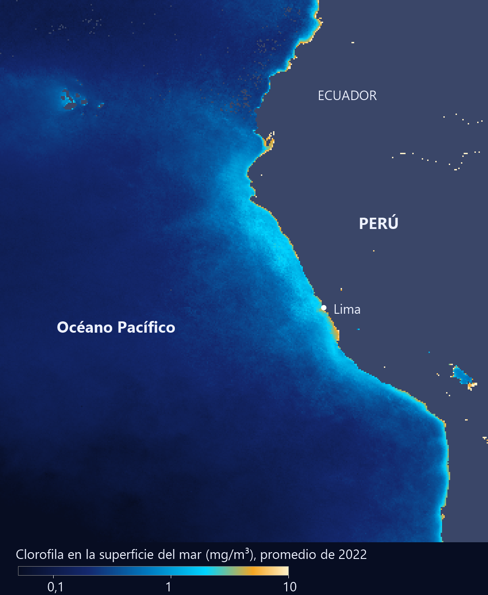

Por qué hay tanta pesca frente a Perú
Si soplás sobre una taza de café, el líquido se mueve hacia donde soplaste. En el océano abierto, no. El viento empuja el mar y el agua termina yendo, en promedio, a un costado. Ese detalle, que viene de la rotación de la Tierra, explica por qué algunas costas áridas tienen los mares más ricos del mundo.
El viento mueve el agua de la superficie. Esa capa arrastra por fricción a la de abajo, y esta a la siguiente, cada una más lenta que la anterior, hasta que el movimiento desaparece a unos 100 metros de profundidad [1]. Pero el agua también se desvía por el efecto de Coriolis: a la derecha en el hemisferio norte y a la izquierda en el sur [1]. Cada capa se desvía un poco más que la anterior, y así se forma una espiral, que lleva el nombre del científico sueco Vagn Walfrid Ekman, que la propuso en 1902 [1]. Las capas profundas se giran tanto que tienden a fluir en sentido opuesto a la corriente superficial [1].
Un mazo de naipes: empujá un mazo por encima y las cartas se deslizan una sobre otra, cada vez menos. Ahora imaginá que cada carta, además, gira un poquito respecto de la de arriba. Visto desde arriba, el mazo forma una escalera en espiral.
Lo que importa no es cada capa, sino la suma. Si se integra el movimiento en toda la profundidad, el transporte neto de agua queda aproximadamente en ángulo recto respecto del viento: a la derecha en el hemisferio norte [2]. Esto es el transporte de Ekman, y en la teoría ideal solo depende del esfuerzo del viento y del parámetro de Coriolis [2]:
El resultado es curioso: no depende de la viscosidad. Cuanto más se rota, menos agua se mueve, porque f crece con la latitud. Con un esfuerzo de 0,1 Pa a 15° de latitud, M da 2,6 m²/s. A lo largo de 1000 kilómetros de costa, eso son unos 2,6 millones de metros cúbicos por segundo (cálculos propios con un valor de ejemplo), más de 200 veces el caudal medio del Paraná en Yacyretá.
El afloramiento o surgencia ocurre cuando el viento empuja el agua superficial y otra sube desde abajo para reemplazarla [3]. Las condiciones son óptimas cuando el viento sopla a lo largo de la costa [3]. Ahí es donde entra Ekman, y conviene verlo con un caso.
Frente a Perú, la costa corre aproximadamente de sudeste a noroeste, y el mar queda al oeste. Si el viento sopla hacia el noroeste, siguiendo la costa, el transporte de Ekman va hacia la izquierda del viento, es decir, hacia el sudoeste: mar adentro (un razonamiento propio a partir de [1] y [2]). El agua de la superficie se aleja de la costa, y el agua profunda sube a reemplazarla.
Esa agua es más fría y rica en nutrientes [3]. Los nutrientes «fertilizan» la superficie, con alta productividad biológica, y por eso las buenas zonas de pesca suelen estar donde hay surgencia [3]. En el Pacífico, la NOAA lo dice directamente: el agua fría frente a Sudamérica es rica en nutrientes, sostiene altos niveles de producción primaria, ecosistemas marinos diversos y grandes pesquerías [4].

Qué la apaga: durante El Niño, la capa cálida se hace más profunda frente a Sudamérica, la surgencia pierde eficacia para enfriar la superficie y se corta el aporte de agua rica en nutrientes [4]. El viento sigue, pero lo que sube ya no es lo mismo. La ciencia pesquera y la mecánica de fluidos terminan siendo el mismo problema.
El viento no empuja el mar en su propia dirección: la fricción entre capas y la rotación de la Tierra forman una espiral, y el transporte neto va a un costado. Cuando eso aleja el agua de la costa, sube agua fría y cargada de nutrientes desde abajo. Un argumento de fluidos en rotación explica dónde está la comida del mar.
Pregunta para la comunidad: En la costa atlántica patagónica, ¿qué dirección de viento favorecería la surgencia? ¿Y por qué la fórmula de Ekman deja de funcionar exactamente en el ecuador?